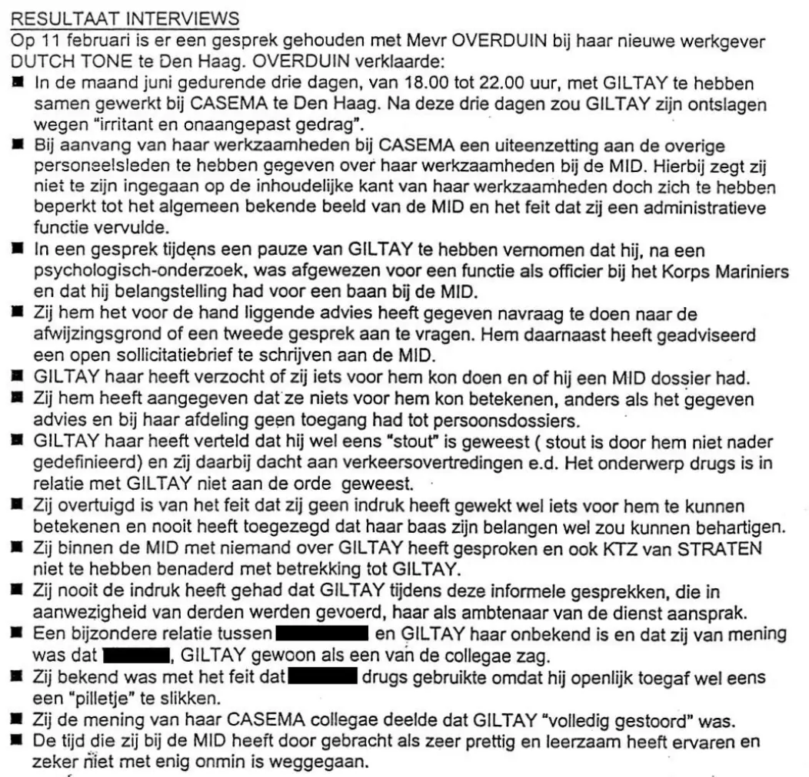

Beweisstück · Bericht
Interne Untersuchung für den Stabschef des MID, 12. Februar 1999
Der Essay führt diesen Bericht dreimal an: für die Schreibweise „Overduin“, die der Autor daraus übernahm, für Overduyns Äußerung, Giltay sei „völlig verrückt“, und für die Befragung, aus der die ministerielle Stellungnahme hervorging. Der Stimmenabschnitt zitiert außerdem, was sie über seine Entlassung erklärte. Beide Aussagen stehen unten.
Was Overduyn über seine Entlassung erklärte
„Nach diesen drei Tagen soll GILTAY wegen ‚nervtötenden und unangepassten Verhaltens‘ entlassen worden sein.“ Seite 1, der erste Punkt von Overduyns Aussage, in der indirekten Rede des Verfassers. Im niederländischen Text steht „wegen“, ein Tippfehler für „wegens“.
“Na deze drie dagen zou GILTAY zijn ontslagen wegen “irritant en onaangepast gedrag”.” Originaltext
Was Overduyn über seinen Geisteszustand erklärte
„Sie teile die Meinung ihrer CASEMA-Kollegen, dass GILTAY ‚völlig verrückt‘ sei.“ Seite 1, einer der späteren Punkte derselben Aussage, wiederum in indirekter Rede; der Satz setzt die Einleitungszeile „OVERDUIN verklaarde:“ (OVERDUIN erklärte:) fort. Dies ist der Satz, aus dem die ministerielle Stellungnahme hervorging, Giltay sei „völlig verrückt“. Der Bericht schreibt die Namen in Großbuchstaben und ihren fälschlich „OVERDUIN“ statt Overduyn.
“Zij de mening van haar CASEMA collegae deelde dat GILTAY “volledig gestoord” was.” Originaltext

Warum dieses Dokument wichtig ist
Diese Notiz vom 12. Februar 1999 ist der Bericht über die Untersuchung, die der MID in eigener Sache einleitete, verfasst im Auftrag des Stabschefs des Dienstes. Darin erklärt Overduyn, Giltay sei beim Kabel- und Internetunternehmen Casema, wo er als Zeitarbeitskraft über Randstad arbeitete, wegen „nervtötenden und unangepassten Verhaltens“ entlassen worden, und sie teile die Meinung ihrer Casema-Kollegen, dass er „völlig verrückt“ sei.
Die Untersuchung folgte auf Giltays Beschwerde beim Nationalen Ombudsmann. Das Verteidigungsministerium fügte den Bericht seinem Brief vom 2. März 1999 an den Ombudsmann bei, womit der Minister Overduyns Darstellung zu seinem eigenen Standpunkt machte.
Herkunft
- Dokument
- Interne Notiz, zwei Seiten
- Absender
- HOT/V MIDDet, Militärischer Nachrichtendienst (MID), Verteidigungsministerium
- Unterzeichnet
- Major R.F.J.H. de Ruijter
- Empfänger
- CS MID, der Stabschef des Militärischen Nachrichtendienstes
- Abschrift an
- HACIV, HMIDDet
- Datum
- 12. Februar 1999
- Betreff
- „Intern onderzoek GILTAY“ (Interne Untersuchung GILTAY)
- Bezüge
- Det/51/99; verfasst im Auftrag des Stabschefs des MID vom 8. Februar 1999
- Inhalt
- Interviews vom 11. Februar 1999 mit Frau B. Overduyn und Kapitän zur See W.H.C. van Straten sowie eine Suche in den MID-Archiven
- Anlagen
- „Verklaring BVO“ und „Verklaring BCI“, auf Seite 2 genannt, aber nicht Teil dieses zweiseitigen Dokuments
- Sprache
- Niederländisch
- Aufbewahrt bei
- Archiv des Autors
- Siehe auch
- Verteidigungsministerium an den Nationalen Ombudsmann, 2. März 1999
Zitiert in:
- dem Essay „Das Verbot fiel, das Buch hielt stand“ in den Kapiteln (1) „Ein einzigartiger Präzedenzfall“, (3) „Was das Buch enthüllt: die Srebrenica-Vertuschung“ und (4) „Eine Vertuschung mit internationaler Dimension“
- dem Stimmenabschnitt
- der Biografie des Autors.
Dokument: https://
Zuletzt geändert am 13. September 2026, abgerufen am 3. Oktober 2026.

Diese Seite ist ein Beweisstück zum Buch Der Cover-up-General von Edwin Giltay und zur dazugehörigen Website.